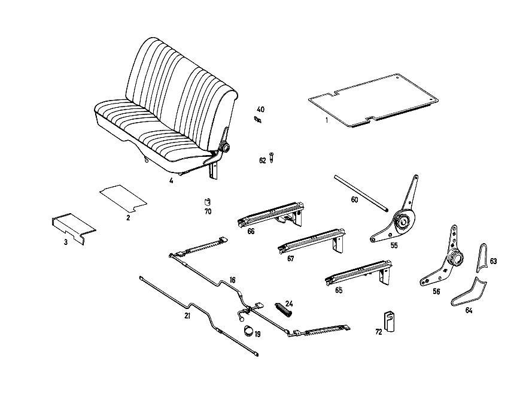

| № | Артикул | Название | Кол. | Примечание | Ограничение |
|---|---|---|---|---|---|
| 1 | A 108 680 09 41 | НАСТИЛ | 1 | ЗАДН. ПОЛ СПРАВА Z 55.703/01, Z 55.703/02, Z 55.703/03 [001] UP TO CHASSIS: 108.016 081024 108.018 087265 | |
| 2 | A 108 684 37 02 | НАСТИЛ | 1 | СЛЕВА Z 55.703/01, Z 55.703/02, Z 55.703/03 [406] ПРИ ЗАКАЗЕ УКАЗЫВАТЬ НОМЕР ЦВЕТА [003] FROM CHASSIS: 108.012 022069 108.014 018537 108.015 001540 | |
| 4 | A 108 910 63 12 | СИДЕНЬЕ ВОДИТЕЛЯ | 1 | Рулевое управление: Влево Z 55.703/01 [406] ПРИ ЗАКАЗЕ УКАЗЫВАТЬ НОМЕР ЦВЕТА | |
| 10 | A 108 910 09 30 | - ПОДУШКА СИДЕНЬЯ | 1 | Рулевое управление: Влево Z 55.703/01 [406] ПРИ ЗАКАЗЕ УКАЗЫВАТЬ НОМЕР ЦВЕТА | |
| 19 | A 110 919 00 60 | - РУЧКА | 1 | для ADJUSTER Z 55.703/01, Z 55.703/02, Z 55.703/03, Z 55.703/04, Z 55.703/05, Z 55.703/06 | |
| 21 | A 108 919 00 27 | - ТЯГА СОЕДИНИТЕЛЬНАЯ | 1 | Z 55.703/01, Z 55.703/02, Z 55.703/03, Z 55.703/04, Z 55.703/05, Z 55.703/06 [021] UP TO CHASSIS: 108.016 025948 108.018,019 026697 | |
| 24 | A 108 919 04 37 | - пружина | 1 | Z 55.703/01, Z 55.703/02, Z 55.703/03, Z 55.703/04, Z 55.703/05, Z 55.703/06 | |
| 25 | A 108 910 07 40 | - КОРОБ ПРУЖИНЫ | 1 | Z 55.703/01, Z 55.703/02, Z 55.703/03, Z 55.703/04, Z 55.703/05, Z 55.703/06 | |
| 26 | A 108 914 05 14 | - НАКЛАДКА | 1 | Z 55.703/01 | |
| 30 | A 000 984 20 61 | - Скоба | 22 | Z 55.703/01, Z 55.703/02, Z 55.703/03, Z 55.703/04, Z 55.703/05, Z 55.703/06 | |
| 31 | A 108 910 14 46 | - ОБИВКА | 1 | Z 55.703/01 [001] UP TO CHASSIS: 108.016 081024 108.018 087265 [402] БОЛЬШЕ НЕ ПОСТАВЛЯЕТСЯ | |
| 41 | A 108 910 19 32 | - СПИНКА СИДЕНЬЯ | 1 | Z 55.703/01 [406] ПРИ ЗАКАЗЕ УКАЗЫВАТЬ НОМЕР ЦВЕТА | |
| 45 | A 108 910 04 34 | - РАМА СПИНКИ | 1 | Z 55.703/01, Z 55.703/02, Z 55.703/03, Z 55.703/04, Z 55.703/05, Z 55.703/06 | |
| 46 | A 108 910 01 41 | - КОРОБ ПРУЖИНЫ | 1 | LEFT FRONT SEAT BENCH BACKREST Z 55.703/01, Z 55.703/02, Z 55.703/03, Z 55.703/04, Z 55.703/05, Z 55.703/06 | |
| 49 | A 108 914 13 16 | - НАКЛАДКА | 1 | FRONT SEAT BENCH BACKREST Z 55.703/01 | |
| 50 | A 108 910 05 47 | - ОБИВКА | 1 | Z 55.703/01 [406] ПРИ ЗАКАЗЕ УКАЗЫВАТЬ НОМЕР ЦВЕТА | |
| 53 | A 108 910 06 39 | - Обшивка | 1 | Z 55.703/01, Z 55.703/03 [406] ПРИ ЗАКАЗЕ УКАЗЫВАТЬ НОМЕР ЦВЕТА | |
| 55 | A 000 910 47 85 | - РЕГУЛИРОВКА СПИНКИ | 1 | СЛЕВА Рулевое управление: Влево Z 55.703/01, Z 55.703/02, Z 55.703/03, Z 55.703/04, Z 55.703/05, Z 55.703/06 [023] UP TO CHASSIS: 108.012 074620 108.016 024171 108.018 024493 108.019 024266 108.014,015 UNTIL PRODUCTION STOP | |
| 56 | A 000 910 51 85 | - РЕГУЛИРОВКА СПИНКИ | 1 | СЛЕВА Рулевое управление: Влево Z 55.703/01, Z 55.703/02, Z 55.703/03, Z 55.703/04, Z 55.703/05, Z 55.703/06 [024] FROM CHASSIS: 108.012 074621 108.016 024172 108.018 024494 108.019 024267 | |
| 60 | A 108 918 01 27 | - СОЕДИНЕНИЕ | 1 | Z 55.703/01, Z 55.703/02, Z 55.703/03, Z 55.703/04, Z 55.703/05, Z 55.703/06 [402] БОЛЬШЕ НЕ ПОСТАВЛЯЕТСЯ [023] UP TO CHASSIS: 108.012 074620 108.016 024171 108.018 024493 108.019 024266 108.014,015 UNTIL PRODUCTION STOP | |
| 62 | A 115 997 00 86 | - ЗАГЛУШКА | 2 | Z 55.703/01, Z 55.703/02, Z 55.703/03, Z 55.703/04, Z 55.703/05, Z 55.703/06 [024] FROM CHASSIS: 108.012 074621 108.016 024172 108.018 024494 108.019 024267 | |
| 63 | A 115 913 01 28 | - ПАНЕЛЬ | 1 | AT UPPER PART,LEFT Z 55.703/01, Z 55.703/02, Z 55.703/03, Z 55.703/04, Z 55.703/05, Z 55.703/06 [024] FROM CHASSIS: 108.012 074621 108.016 024172 108.018 024494 108.019 024267 | |
| 64 | A 115 913 03 28 | - ПАНЕЛЬ | 1 | AT LOWER PART,LEFT Z 55.703/01, Z 55.703/02, Z 55.703/03, Z 55.703/04, Z 55.703/05, Z 55.703/06 [024] FROM CHASSIS: 108.012 074621 108.016 024172 108.018 024494 108.019 024267 | |
| 65 | A 108 910 25 05 | - НАПРАВЛЯЮЩАЯ СИДЕНЬЯ | 1 | СНАРУЖИ СЛЕВА Z 55.703/01, Z 55.703/02, Z 55.703/03, Z 55.703/04, Z 55.703/05, Z 55.703/06 | |
| 66 | A 108 910 26 05 | - НАПРАВЛЯЮЩАЯ СИДЕНЬЯ | 1 | СНАРУЖИ СПРАВА Z 55.703/01, Z 55.703/02, Z 55.703/03, Z 55.703/04, Z 55.703/05, Z 55.703/06 | |
| 67 | A 108 910 19 05 | - НАПРАВЛЯЮЩАЯ СИДЕНЬЯ | 1 | Рулевое управление: Влево Z 55.703/01, Z 55.703/02, Z 55.703/03, Z 55.703/04, Z 55.703/05, Z 55.703/06 | |
| 70 | A 116 919 00 17 | ПРОСТАВКА | 1 | Z 55.703/01, Z 55.703/02, Z 55.703/03, Z 55.703/04, Z 55.703/05, Z 55.703/06 | |
| 72 | A 108 919 09 20 | ПАНЕЛЬ | 1 | СНАРУЖИ СЛЕВА Рулевое управление: Влево Z 55.703/01, Z 55.703/02, Z 55.703/03, Z 55.703/04, Z 55.703/05, Z 55.703/06 [001] UP TO CHASSIS: 108.016 081024 108.018 087265 | |
| A 108 684 38 02 | НАСТИЛ | 1 | СПРАВА Z 55.703/01, Z 55.703/02, Z 55.703/03 [406] ПРИ ЗАКАЗЕ УКАЗЫВАТЬ НОМЕР ЦВЕТА [003] FROM CHASSIS: 108.012 022069 108.014 018537 108.015 001540 | ||
| A 108 910 53 01 | СИДЕНЬЕ ВОДИТЕЛЯ | - | Z 55.703/01 | ||
| A 108 910 54 01 | СИДЕНЬЕ ВОДИТЕЛЯ | - | Z 55.703/01 | ||
| A 108 910 64 12 | СИДЕНЬЕ ВОДИТЕЛЯ | 1 | Рулевое управление: Вправо Z 55.703/01 [406] ПРИ ЗАКАЗЕ УКАЗЫВАТЬ НОМЕР ЦВЕТА | ||
| A 108 910 55 01 | СИДЕНЬЕ ВОДИТЕЛЯ | - | Z 55.703/02 | ||
| A 108 910 67 12 | СИДЕНЬЕ ВОДИТЕЛЯ | 1 | Рулевое управление: Влево Z 55.703/02 [406] ПРИ ЗАКАЗЕ УКАЗЫВАТЬ НОМЕР ЦВЕТА | ||
| A 108 910 56 01 | СИДЕНЬЕ ВОДИТЕЛЯ | - | Z 55.703/02 | ||
| A 108 910 68 12 | СИДЕНЬЕ ВОДИТЕЛЯ | 1 | Рулевое управление: Вправо Z 55.703/02 [406] ПРИ ЗАКАЗЕ УКАЗЫВАТЬ НОМЕР ЦВЕТА | ||
| A 108 910 57 01 | СИДЕНЬЕ ВОДИТЕЛЯ | - | Z 55.703/03 | ||
| A 108 910 65 12 | СИДЕНЬЕ ВОДИТЕЛЯ | 1 | Рулевое управление: Влево Z 55.703/03 | ||
| A 108 910 58 01 | СИДЕНЬЕ ВОДИТЕЛЯ | - | Z 55.703/03 | ||
| A 108 910 66 12 | СИДЕНЬЕ ВОДИТЕЛЯ | 1 | Рулевое управление: Вправо Z 55.703/03 [406] ПРИ ЗАКАЗЕ УКАЗЫВАТЬ НОМЕР ЦВЕТА | ||
| A 108 910 10 30 | - ПОДУШКА СИДЕНЬЯ | 1 | Рулевое управление: Вправо Z 55.703/01 [406] ПРИ ЗАКАЗЕ УКАЗЫВАТЬ НОМЕР ЦВЕТА | ||
| A 108 910 11 30 | - ПОДУШКА СИДЕНЬЯ | 1 | Рулевое управление: Влево Z 55.703/02 [406] ПРИ ЗАКАЗЕ УКАЗЫВАТЬ НОМЕР ЦВЕТА | ||
| A 108 910 12 30 | - ПОДУШКА СИДЕНЬЯ | 1 | Рулевое управление: Вправо Z 55.703/02 [406] ПРИ ЗАКАЗЕ УКАЗЫВАТЬ НОМЕР ЦВЕТА | ||
| A 108 910 13 30 | - ПОДУШКА СИДЕНЬЯ | 1 | Рулевое управление: Влево Z 55.703/03 [406] ПРИ ЗАКАЗЕ УКАЗЫВАТЬ НОМЕР ЦВЕТА | ||
| A 108 910 14 30 | - ПОДУШКА СИДЕНЬЯ | 1 | Рулевое управление: Вправо Z 55.703/03 [406] ПРИ ЗАКАЗЕ УКАЗЫВАТЬ НОМЕР ЦВЕТА [402] БОЛЬШЕ НЕ ПОСТАВЛЯЕТСЯ | ||
| A 108 910 02 22 | - РАМА ПОДУШКИ | - | Z 55.703/01, Z 55.703/02, Z 55.703/03, Z 55.703/04, Z 55.703/05, Z 55.703/06 [021] UP TO CHASSIS: 108.016 025948 108.018,019 026697 | ||
| A 108 910 31 05 | - ФИКСАТОР | 1 | Рулевое управление: Влево Z 55.703/01, Z 55.703/02, Z 55.703/03, Z 55.703/04, Z 55.703/05, Z 55.703/06 [021] UP TO CHASSIS: 108.016 025948 108.018,019 026697 | ||
| A 108 910 32 05 | - ФИКСАТОР | 1 | Рулевое управление: Вправо Z 55.703/01, Z 55.703/02, Z 55.703/03, Z 55.703/04, Z 55.703/05, Z 55.703/06 [021] UP TO CHASSIS: 108.016 025948 108.018,019 026697 | ||
| A 111 984 03 35 | - ЗАКЛЁПКА | 3 | Z 55.703/01, Z 55.703/02, Z 55.703/03, Z 55.703/04, Z 55.703/05, Z 55.703/06 | ||
| A 000 990 74 91 | - ГАЙКОДЕРЖАТЕЛЬ | 6 | Z 55.703/01, Z 55.703/02, Z 55.703/03, Z 55.703/04, Z 55.703/05, Z 55.703/06 | ||
| A 000 990 05 30 | - БОЛТ | 12 | Z 55.703/01, Z 55.703/02, Z 55.703/03, Z 55.703/04, Z 55.703/05, Z 55.703/06 | ||
| A 108 914 06 14 | - НАКЛАДКА | 1 | Z 55.703/02, Z 55.703/03, Z 55.703/04, Z 55.703/05, Z 55.703/06 [028] ТКАНЬ ОБИВКИ | ||
| A 108 914 08 14 | - НАКЛАДКА | 1 | Z 55.703/01, Z 55.703/02, Z 55.703/03, Z 55.703/04, Z 55.703/05, Z 55.703/06 [021] UP TO CHASSIS: 108.016 025948 108.018,019 026697 | ||
| A 108 910 19 46 | - ОБИВКА | 1 | Z 55.703/02 [001] UP TO CHASSIS: 108.016 081024 108.018 087265 | ||
| A 108 910 18 46 | - ОБИВКА | 1 | Z 55.703/03 [406] ПРИ ЗАКАЗЕ УКАЗЫВАТЬ НОМЕР ЦВЕТА [402] БОЛЬШЕ НЕ ПОСТАВЛЯЕТСЯ | ||
| A 000 984 20 61 | - Скоба | 13 | Z 55.703/01, Z 55.703/02, Z 55.703/03, Z 55.703/04, Z 55.703/05, Z 55.703/06 | ||
| A 108 910 20 32 | - СПИНКА СИДЕНЬЯ | 1 | Z 55.703/02 [406] ПРИ ЗАКАЗЕ УКАЗЫВАТЬ НОМЕР ЦВЕТА | ||
| A 108 910 21 32 | - СПИНКА СИДЕНЬЯ | 1 | Z 55.703/03 [406] ПРИ ЗАКАЗЕ УКАЗЫВАТЬ НОМЕР ЦВЕТА | ||
| A 108 910 01 34 | - РАМА СПИНКИ | - | Z 55.703/01, Z 55.703/02, Z 55.703/03, Z 55.703/04, Z 55.703/05, Z 55.703/06 [029] EXHAUST STOCK OF OLD PART NUMBERS FIRST UP TO CHASSIS 108.012 074620 108.016 024171 108.018 024493 108.019 024266 108.014,015 UNTIL PRODUCTION STOP | ||
| A 108 910 02 41 | - КОРОБ ПРУЖИНЫ | 1 | FRONT SEAT BACKREST,REAR Z 55.703/01, Z 55.703/02, Z 55.703/03, Z 55.703/04, Z 55.703/05, Z 55.703/06 | ||
| N 007981 005200 | - САМОРЕЗ | 8 | Z 55.703/01, Z 55.703/02, Z 55.703/03 [004] UP TO CHASSIS: 108.012 059098 108.014 045822 108.015 002614 | ||
| A 000 990 38 22 | - БОЛТ | 8 | Z 55.703/01, Z 55.703/02, Z 55.703/03, Z 55.703/04, Z 55.703/05, Z 55.703/06 [005] FROM CHASSIS: 108.012 059099 108.014 045823 108.015 002615 108.015,018 000001 | ||
| A 108 914 14 16 | - НАКЛАДКА | 1 | FRONT SEAT BENCH BACKREST Z 55.703/02, Z 55.703/03, Z 55.703/04, Z 55.703/05, Z 55.703/06 [028] ТКАНЬ ОБИВКИ | ||
| A 000 984 20 61 | - Скоба | 44 | (PAD TO SPRING CORE) Z 55.703/01, Z 55.703/02, Z 55.703/03, Z 55.703/04, Z 55.703/05, Z 55.703/06 | ||
| A 108 910 06 47 | - ОБИВКА | 1 | Z 55.703/02 [406] ПРИ ЗАКАЗЕ УКАЗЫВАТЬ НОМЕР ЦВЕТА | ||
| A 108 910 07 47 | - ОБИВКА | 1 | Z 55.703/03 [406] ПРИ ЗАКАЗЕ УКАЗЫВАТЬ НОМЕР ЦВЕТА | ||
| A 108 910 07 39 | - Обшивка | 1 | Z 55.703/02, Z 55.703/06 [406] ПРИ ЗАКАЗЕ УКАЗЫВАТЬ НОМЕР ЦВЕТА | ||
| A 136 984 02 60 | - СКОБА | 12 | Z 55.703/01, Z 55.703/02, Z 55.703/03, Z 55.703/04, Z 55.703/05, Z 55.703/06 | ||
| A 000 910 48 85 | - РЕГУЛИРОВКА СПИНКИ | 1 | СПРАВА Рулевое управление: Вправо Z 55.703/01, Z 55.703/02, Z 55.703/03, Z 55.703/04, Z 55.703/05, Z 55.703/06 [023] UP TO CHASSIS: 108.012 074620 108.016 024171 108.018 024493 108.019 024266 108.014,015 UNTIL PRODUCTION STOP | ||
| A 000 910 52 85 | - РЕГУЛИРОВКА СПИНКИ | 1 | СПРАВА Рулевое управление: Вправо Z 55.703/01, Z 55.703/02, Z 55.703/03, Z 55.703/04, Z 55.703/05, Z 55.703/06 [024] FROM CHASSIS: 108.012 074621 108.016 024172 108.018 024494 108.019 024267 | ||
| A 000 918 03 26 | - Маховичок | 1 | Z 55.703/01, Z 55.703/02, Z 55.703/03, Z 55.703/04, Z 55.703/05, Z 55.703/06 [023] UP TO CHASSIS: 108.012 074620 108.016 024171 108.018 024493 108.019 024266 108.014,015 UNTIL PRODUCTION STOP | ||
| A 000 910 49 86 | - РЕГУЛИРОВКА СПИНКИ | 1 | СЛЕВА Рулевое управление: Вправо Z 55.703/01, Z 55.703/02, Z 55.703/03, Z 55.703/04, Z 55.703/05, Z 55.703/06 [023] UP TO CHASSIS: 108.012 074620 108.016 024171 108.018 024493 108.019 024266 108.014,015 UNTIL PRODUCTION STOP | ||
| A 000 910 57 86 | - РЕГУЛИРОВКА СПИНКИ | 1 | Рулевое управление: Вправо Z 55.703/01, Z 55.703/02, Z 55.703/03, Z 55.703/04, Z 55.703/05, Z 55.703/06 [024] FROM CHASSIS: 108.012 074621 108.016 024172 108.018 024494 108.019 024267 | ||
| A 000 910 50 86 | - РЕГУЛИРОВКА СПИНКИ | 1 | СПРАВА Рулевое управление: Влево Z 55.703/01, Z 55.703/02, Z 55.703/03, Z 55.703/04, Z 55.703/05, Z 55.703/06 [023] UP TO CHASSIS: 108.012 074620 108.016 024171 108.018 024493 108.019 024266 108.014,015 UNTIL PRODUCTION STOP | ||
| A 000 910 58 86 | - РЕГУЛИРОВКА СПИНКИ | 1 | СПРАВА Рулевое управление: Влево Z 55.703/01, Z 55.703/02, Z 55.703/03, Z 55.703/04, Z 55.703/05, Z 55.703/06 [024] FROM CHASSIS: 108.012 074621 108.016 024172 108.018 024494 108.019 024267 | ||
| A 108 910 18 96 | - СОЕДИНЕНИЕ | 1 | Z 55.703/01, Z 55.703/02, Z 55.703/03, Z 55.703/04, Z 55.703/05, Z 55.703/06 [402] БОЛЬШЕ НЕ ПОСТАВЛЯЕТСЯ [024] FROM CHASSIS: 108.012 074621 108.016 024172 108.018 024494 108.019 024267 | ||
| A 000 918 06 96 | - ПОДКЛАДКА | 2 | Z 55.703/01, Z 55.703/02, Z 55.703/03, Z 55.703/04, Z 55.703/05, Z 55.703/06 [023] UP TO CHASSIS: 108.012 074620 108.016 024171 108.018 024493 108.019 024266 108.014,015 UNTIL PRODUCTION STOP | ||
| N 007987 008145 | - БОЛТ | 4 | Z 55.703/01, Z 55.703/02, Z 55.703/03, Z 55.703/04, Z 55.703/05, Z 55.703/06 | ||
| A 112 990 01 31 | - БОЛТ | 4 | Z 55.703/01, Z 55.703/02, Z 55.703/03, Z 55.703/04, Z 55.703/05, Z 55.703/06 | ||
| A 115 913 02 28 | - ПАНЕЛЬ | 1 | СПРАВА Z 55.703/01, Z 55.703/02, Z 55.703/03, Z 55.703/04, Z 55.703/05, Z 55.703/06 [024] FROM CHASSIS: 108.012 074621 108.016 024172 108.018 024494 108.019 024267 | ||
| A 115 913 04 28 | - ПАНЕЛЬ | 1 | СПРАВА Z 55.703/01, Z 55.703/02, Z 55.703/03, Z 55.703/04, Z 55.703/05, Z 55.703/06 [024] FROM CHASSIS: 108.012 074621 108.016 024172 108.018 024494 108.019 024267 | ||
| N 914028 006100 | Винт с неспадающей шайбой | - | Z 55.703/01, Z 55.703/02, Z 55.703/03, Z 55.703/04, Z 55.703/05, Z 55.703/06 | ||
| A 004 990 16 01 | болт | 9 | Z 55.703/01, Z 55.703/02, Z 55.703/03, Z 55.703/04, Z 55.703/05, Z 55.703/06 | ||
| A 108 910 01 06 | НАКЛАДКА ПОДУШКИ СИДЕНЬЯ | - | Z 55.703/01 | ||
| A 108 910 09 06 | НАКЛАДКА ПОДУШКИ СИДЕНЬЯ | 1 | Рулевое управление: Влево Z 55.703/01 [402] БОЛЬШЕ НЕ ПОСТАВЛЯЕТСЯ | ||
| A 108 910 02 06 | НАКЛАДКА ПОДУШКИ СИДЕНЬЯ | - | Z 55.703/01 | ||
| A 108 910 10 06 | НАКЛАДКА ПОДУШКИ СИДЕНЬЯ | 1 | Рулевое управление: Вправо Z 55.703/01 | ||
| A 108 910 03 06 | НАКЛАДКА ПОДУШКИ СИДЕНЬЯ | - | Рулевое управление: Влево Z 55.703/02, Z 55.703/03, Z 55.703/04, Z 55.703/05, Z 55.703/06 | ||
| A 108 910 05 06 | НАКЛАДКА ПОДУШКИ СИДЕНЬЯ | - | Рулевое управление: Влево Z 55.703/02, Z 55.703/03, Z 55.703/04, Z 55.703/05, Z 55.703/06 | ||
| A 108 910 11 06 | НАКЛАДКА ПОДУШКИ СИДЕНЬЯ | 1 | Рулевое управление: Влево Z 55.703/02, Z 55.703/03, Z 55.703/04, Z 55.703/05, Z 55.703/06 [402] БОЛЬШЕ НЕ ПОСТАВЛЯЕТСЯ [028] ТКАНЬ ОБИВКИ | ||
| A 108 910 04 06 | НАКЛАДКА ПОДУШКИ СИДЕНЬЯ | 1 | Рулевое управление: Вправо Z 55.703/02, Z 55.703/03, Z 55.703/04, Z 55.703/05, Z 55.703/06 | ||
| A 108 910 06 06 | НАКЛАДКА ПОДУШКИ СИДЕНЬЯ | 1 | Рулевое управление: Вправо Z 55.703/02, Z 55.703/03, Z 55.703/04, Z 55.703/05, Z 55.703/06 | ||
| A 108 910 12 06 | НАКЛАДКА ПОДУШКИ СИДЕНЬЯ | 1 | Рулевое управление: Вправо Z 55.703/02, Z 55.703/03, Z 55.703/04, Z 55.703/05, Z 55.703/06 [028] ТКАНЬ ОБИВКИ | ||
| A 108 910 13 07 | СПИНКА СИДЕНЬЯ | 1 | Z 55.703/01 | ||
| A 108 910 14 07 | СПИНКА СИДЕНЬЯ | - | Z 55.703/02 | ||
| A 108 910 15 07 | СПИНКА СИДЕНЬЯ | 1 | Z 55.703/02, Z 55.703/03, Z 55.703/04, Z 55.703/05, Z 55.703/06 [402] БОЛЬШЕ НЕ ПОСТАВЛЯЕТСЯ [028] ТКАНЬ ОБИВКИ | ||
| A 108 919 00 17 | ПРОСТАВКА | - | Z 55.703/01, Z 55.703/02, Z 55.703/03, Z 55.703/04, Z 55.703/05, Z 55.703/06 | ||
| N 000931 006114 | Винт | - | Z 55.703/01, Z 55.703/02, Z 55.703/03, Z 55.703/04, Z 55.703/05, Z 55.703/06 | ||
| N 304017 006012 | Винт с 6-гранной головкой | 1 | M6X30\-8.8 Z 55.703/01, Z 55.703/02, Z 55.703/03, Z 55.703/04, Z 55.703/05, Z 55.703/06 | ||
| A 094 990 68 10 | Пружинное кольцо | 1 | Z 55.703/01, Z 55.703/02, Z 55.703/03, Z 55.703/04, Z 55.703/05, Z 55.703/06 | ||
| A 000 990 71 91 | Гайкодержатель | 1 | Z 55.703/01, Z 55.703/02, Z 55.703/03, Z 55.703/04, Z 55.703/05, Z 55.703/06 | ||
| A 108 919 04 20 | ПАНЕЛЬ | - | Z 55.703/01, Z 55.703/02, Z 55.703/03, Z 55.703/04, Z 55.703/05, Z 55.703/06 [011] EXHAUST STOCK OF OLD PART NUMBERS FIRST UP TO CHASSIS 108.012 053398 108.014 042066 108.015 002589 | ||
| A 108 919 04 20 | ПАНЕЛЬ | - | Z 55.703/01, Z 55.703/02, Z 55.703/03, Z 55.703/04, Z 55.703/05, Z 55.703/06 | ||
| A 108 919 08 20 | ПАНЕЛЬ | - | Z 55.703/01, Z 55.703/02, Z 55.703/03, Z 55.703/04, Z 55.703/05, Z 55.703/06 | ||
| A 108 919 19 20 | ПАНЕЛЬ | 1 | INSIDE,FRONT SEAT BENCH BRACKET TO TUNNEL,ON THE RIGHT Рулевое управление: Влево Z 55.703/01, Z 55.703/02, Z 55.703/03, Z 55.703/04, Z 55.703/05, Z 55.703/06 [001] UP TO CHASSIS: 108.016 081024 108.018 087265 | ||
| A 108 919 10 20 | ПАНЕЛЬ | 1 | Рулевое управление: Вправо Z 55.703/01, Z 55.703/02, Z 55.703/03, Z 55.703/04, Z 55.703/05, Z 55.703/06 [001] UP TO CHASSIS: 108.016 081024 108.018 087265 |
Позиций: 106 · подписано на схемах: 28 · колесо — плавный зум в курсор, перетаскивание — пан, двойной клик — зум, клик по артикулу — скопировать.